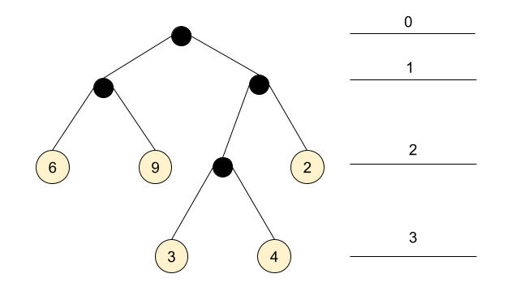
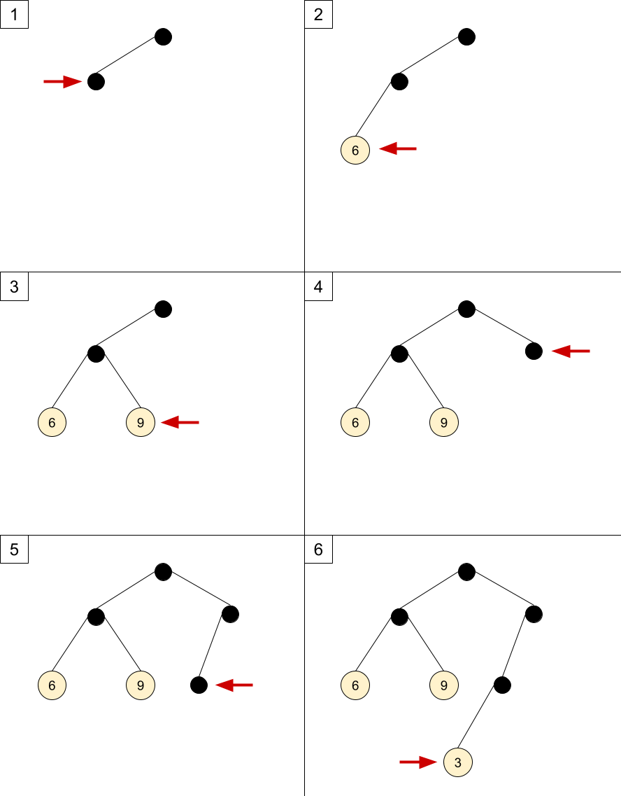

I ran into an interesting algorithm while hacking on Advent of Code a while ago. This post is a summary of what I've learned.
Consider a binary tree that represents nested pairs, where each pair consists of two kinds of elements: a number, or another pair. For example, the nested pair ((6 9) ((3 4) 2)) is represented with this tree [1]:
(ignore the numbered lines on the right for now, we'll get to them shortly)
Trees representing such pairs have the following characteristics:
- Leaves hold numbers, while internal nodes don't hold numbers, but only pointers to child nodes.
- Each node in the tree has either 0 or 2 children.
- A non-empty tree has at least one internal node.
While looking for alternative solutions to a problem, I ran across Tim Visée's Rust solution which uses an interesting representation of this tree. It's represented by an in-order traversal of the tree, with a list of (value depth) pairs where value is a leaf value and depth is its depth in the tree. The depth starts from 0 at the root - this is what the numbered lines in the diagram above represent.
For our sample tree, the inorder-depth representation is as follows:
(6 2) (9 2) (3 3) (4 3) (2 2)
The surprising realization (at least for me) is that the original tree can be reconstructed from this representation! Note that it's just a list of leaf values - the internal nodes are not specified. It's well known that we can't reconstruct a tree just from its in-order traversal, but a combination of the added depth markers and the restrictions on the tree make it possible.
I'll present a recursive algorithm to reconstruct the tree (based on Tim Visée's code, which does not explicitly rebuild the tree but computes something on it); this algorithm is very clever and isn't easy to grok. Then, I'll present an iterative algorithm which IMHO is easier to understand and explain.
But first, let's start with the data structures. The full (Go) code is available on GitHub.
type DItem struct {
Value int
Depth int
}
type DList []DItem
This is our representation of the inorder-depth list - a slice of DItem values, each of which has a numeric value and depth.
The tree itself is just what you'd expect in Go:
type Tree struct {
Value int
Left, Right *Tree
}
Recursive algorithm
Here is the recursive version of the tree reconstruction algorithm:
func (dl DList) BuildTreeRec() *Tree {
cursor := 0
var builder func(depth int) *Tree
builder = func(depth int) *Tree {
if cursor >= len(dl) {
return nil
}
var left *Tree
if dl[cursor].Depth == depth {
left = &Tree{Value: dl[cursor].Value}
cursor++
} else {
left = builder(depth + 1)
}
var right *Tree
if dl[cursor].Depth == depth {
right = &Tree{Value: dl[cursor].Value}
cursor++
} else {
right = builder(depth + 1)
}
return &Tree{Left: left, Right: right}
}
return builder(1)
}
I find this algorithm fairly tricky to understand; the combination of double recursion with mutable state is powerful. Some tips:
- cursor represents the next item in the inorder-depth list; it may help thinking of it as a queue; taking dl[cursor] and advancing cursor is akin to popping from the head of the queue.
- The depth parameter represents the depth in the tree the builder is currently on. If the next item in the queue has a matching depth, we construct a leaf from it. Otherwise, we recurse with higher depth to construct an internal node starting from it.
- The basic recursive invariant for builder is: the remaining items in dl represent a pair: build its left side, then build its right side.
If it's still not 100% clear, that's OK. In what follows, I'll describe an alternative formulation of this algorithm - without recursion. IMHO this version is easier to follow, and once one gets it - it's also easier to understand the recursive approach.
Iterative algorithm
To get some intuition for how the algorithm works, let's first work through the example we've using throughout this post. We'll take the inorder-depth representation:
(6 2) (9 2) (3 3) (4 3) (2 2)
And will see how to construct a tree from it, step by step. In what follows, the numbered list walks through inserting the first 6 child nodes into the tree, and the steps correspond one-to-one to the diagrams below the list. Each step of the algorithm inserts one node into the tree (either an internal node or a leaf node with the value). The red "pointer" in the diagrams corresponds to the node inserted by each step.
Let's assume we begin with the root node already created.
- To insert (6 2) we have to get to depth 2. The children of the root node would be at depth 1, so we have to create a new internal node first. Since the list is in-order, we create the left child first and move our pointer to it.
- Now our current node's children are depth 2, so we can insert (6 2). Since the current node has no left child, we insert 6 as its left child.
- The next node to insert is (9 2). The node we've just inserted is a leaf, so we backtrack to its parent. Its children are depth two, and it has no right child, so we insert 9 as its right child.
- The next node to insert is (3 3). The current node is a leaf so it can't have children; we climb up to the parent, which already has both its children links created. So we climb up again, to the root. The root has a left child, but no right child. We create the right child.
- Since the current node's children are depth 2, we can't insert (3 3) yet. The current node has no left child, so we create it and move into it.
- The current node's children are depth 3, so we can insert 3 as its left child.
And so on, until we proceed to insert all the values.
The main thing to notice here is that the insertion follows a strict in-order. We go left as far as possible, then backtrack through the parent and turn right. How much is "possible" is determined by the depth markers in the representation, so there's actually no ambiguity [2].
Before we move on to the code, one important point about reaching a parent from a given node. There are at least two common ways to do this: one is keeping parent links in the nodes, and another is using a stack of parents while constructing the tree. In the code shown below, I opt for the second option - an explicit stack of parent nodes. This code can be easily rewritten with parent links instead (try it as an exercise!)
With all that in place, the code shouldn't be hard to understand; here it is, with copious comments:
// BuildTree builds a Tree from a DList using an iterative algorithm.
func (dl DList) BuildTree() *Tree {
if len(dl) == 0 {
return nil
}
// result is the tree this function is building. The result pointer always
// points at the root, so we can return it to the caller. t points to the
// current node being constructed throughout the algorithm.
result := &Tree{}
t := result
// depth is the current depth of t's children.
depth := 1
// stack of parent nodes to implement backtracking up the tree once we're done
// with a subtree.
var stack []*Tree
// The outer loop iterates over all the items in a DList, inserting each one
// into the tree. Loop invariant: all items preceding this item in dl have
// already been inserted into the tree, and t points to the node where the
// last insertion was made.
nextItem:
for _, item := range dl {
// The inner loop find the right place for item in the tree and performs
// insertion.
// Loop invariant: t points at the node where we're trying to insert, depth
// is the depth of its children and stack holds a stack of t's parents.
for {
// Check if item can be inserted as a child of t; this can be done only if
// our depth matches the item's and t doesn't have both its children yet.
// Otherwise, t is not the right place and we have to keep looking.
if item.Depth == depth && t.Left == nil {
t.Left = &Tree{Value: item.Value}
continue nextItem
} else if item.Depth == depth && t.Right == nil {
t.Right = &Tree{Value: item.Value}
continue nextItem
}
// We can't insert at t.
// * If t does not have a left child yet, create it and repeat loop with
// this left child as t.
// * If t does not have a right child yet, create it and repeat loop with
// this right child as t.
// * If t has both children, we have to backtrack up the tree to t's
// parent.
if t.Left == nil {
stack = append(stack, t)
t.Left = &Tree{}
t = t.Left
depth++
} else if t.Right == nil {
stack = append(stack, t)
t.Right = &Tree{}
t = t.Right
depth++
} else {
// Pop from the stack to make t point to its parent
t, stack = stack[len(stack)-1], stack[:len(stack)-1]
depth--
}
}
}
return result
}
Final words
If you take some time to convince yourself that the iterative algorithm works, it becomes easier to understand the recursive one... because it's doing the exact same thing! The loops are replaced by recursion; the explicit parent stack is replaced by an implicit call stack of the recursive function, but otherwise - it's the same algorithm [3].
Finally, some credits are due. Thanks to my wife for helping me come up with the iterative formulation of the algorithm. Thanks to Tim Visée for the inspiration for this post.
| [1] | Note that this is not a binary search tree; the order of values in the leaves is entirely arbitrary. |
| [2] | One way the algorithm avoids ambiguity is by requiring that nodes in the tree have either no children or two children. Nodes with one child would confuse the algorithm; can you see why? |
| [3] | Here is an exercise: the code of the iterative algorithm is currently structured to ease understanding, but what happens if we merge the conditions of t.Left == nil, checking it in just one place and then either inserting (if the depth matches) or keep looking; and the same for t.Right. If you make these changes the algorithm will still work (feel free to use the tests in the accompanying code), and it starts resembling the recursive version even more. |